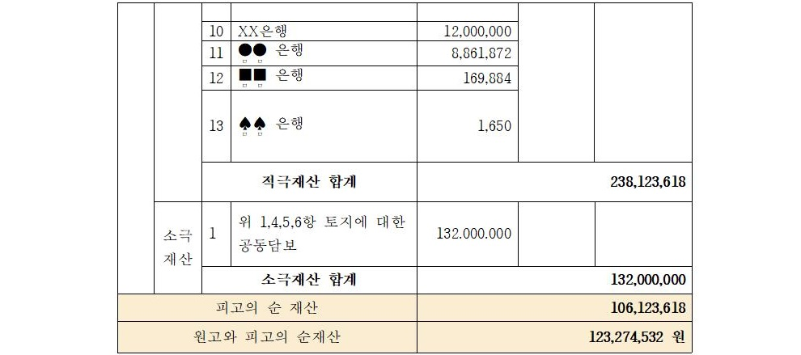
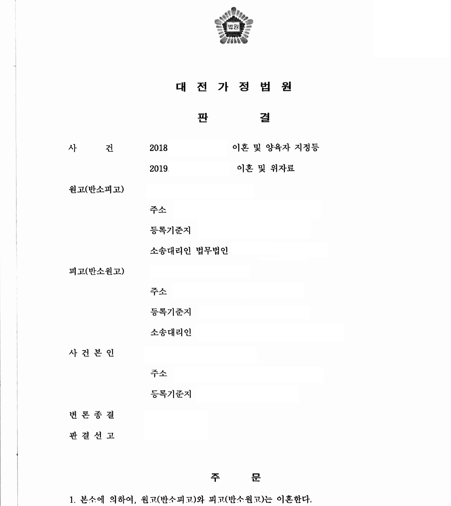

안녕하세요.
법무법인 글로리
대표 변호사 이아무 입니다.
오늘 소개해드릴 사례는
전업주부인 원고가,
사업자인 피고와 혼인하여
5년간의 혼인생활을 한 상황에서
이혼소송이 진행되었고,
그 결과 피고 재산의 절반을 분할해 온 사례입니다.
아무리 법원이 전업주부의 재산 형성 기여도를
인정한다고 하더라도,
50%에 달하는 비율을 인정받기는,
더군다나 전업주부의 소득이 없고,
혼인 기간이 아주 길지 않은 경우에는
쉽지 않다고 볼 수 있는데요,
그럼에도 불구하고 좋은 결과를
이끌어 내었던 사례를 소개해 드리겠습니다.
원고와 피고는 2014년도에
혼인신고를 마친 법률상 부부로
슬하에 미성년 자녀 1명을 두고 있었습니다.
피고의 원고에 대한 심히 부당한 대우,
원고와 사건 본인에 대한
악의적인 유기 및 애정 상실,
피고의 잦은 연락 두절과
부부간 신뢰의 상실로 혼인관계는 파탄에
이르렀고 본 법인을 찾아와
이혼 및 재산분할 소송을 진행하게 되었습니다.
1. 기본적인 사항
① 혼인 기간 : 약 5년 5개월
② 원고 : 주부
피고 : 개인사업자
③ 미성년 자녀 여부 : 1명
2. 분할의 대상이 된 재산



3. 판결 결과(1심 판결)
재산분할 비율 : 원고 50% 피고 50%
원고와 피고의 순재산 합계액인
123,274,532원 X 원고의 재산분할 비율 50% - 원고의 순재산 17,150,914 원
이므로
피고는 원고에게 재산분할로
4천4백만 원을 지급한다는 판결을 받았습니다.


4.위와 같은 결과가 나오게 된 원인
이 사건을 처음 진행할 때,
원피고 중 경제권을 가지고 있었던 사람은 피고였고,
원고는 소액의 예금채권과 보험이 전부였습니다.
게다가 원고는 전업주부였기 때문에,
피고 명의의 어떤 재산이 있는지
정확히 알지 못하는 상황이었는데요,
저희는 원고가 피고의 재산이라고
언급해 준 재산들 외에도
피고의 소득에 비추어
더 많은 재산이 있을 거라고 생각하고,
시간이 좀 더 걸리더라도
조회를 통하여 재산을 추적해 보자고 제안하였습니다.
그 결과 피고가 투자 등으로 소유하고 있던
부동산들을 찾아낼 수 있었고,
예금 채권 또한 상당 부분 밝혀 낼 수 있었습니다.
숨기려 했던 재산이 드러나자
피고는 소득활동이 없었던 원고 보다
자신이 더 많은 재산을 분할 받아야 한다고
강하게 다투기 시작했습니다.
그러나 저희는 피고 명의 재산들의
취득 일자와 경위, 취득에 소비된 금원들의
출처를 조사하였고,
거의 대부분의 피고 명의 재산들이
원고와의 혼인 이후에 벌어들인 사업소득으로
취득한 것이라는 점을 밝혀내었습니다.
즉 피고가 위 재산들이
자신의 특유재산이라고 주장할 여지를 봉쇄하였고,
나아가 사업의 특성상 해외출장이 많은 피고는,
원고의 가사노동과
육아 그리고 내조가 없었다면,
결코 위와 같은 사업장을 운영하여
소득을 발생시킬 수 없었을 것이라는 점을
주장 입증하였습니다.
결과적으로 재판부는
이를 받아들여 모든 재산은
원고와 피고가 5:5로 나누어야 한다는
판결을 내렸습니다.
tip) 재산분할은
'분할 대상 재산의 특정 -> 당사자의 기여도에 대한 주장 입증'
이 핵심이며
이를 위하여 필요한 경우에는
적절한 사실조회 등이 필요합니다.
이 사건은 위 두 핵심사항들을
모두 성공적으로 주장 입증한 사례라 할 것입니다.
비록 일이 좀 더 많아지더라도,
의뢰인을 위하여 성심껏 소송을 대리하여 줄
좋은 변호사를 만나는 것이
성공적인 소송의 첫 단추라 할 수 있습니다~^^